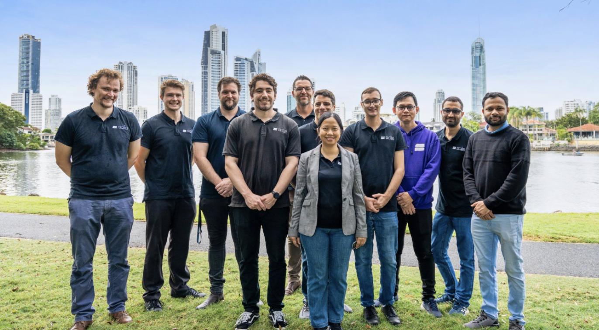
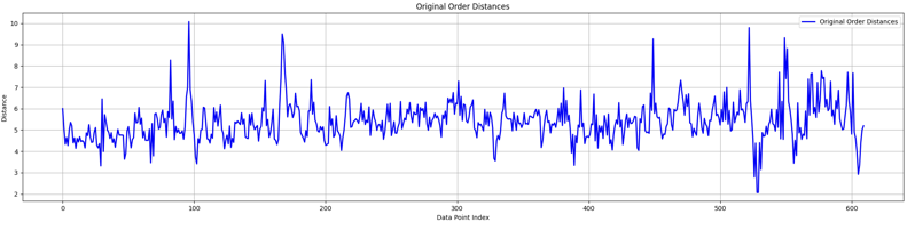
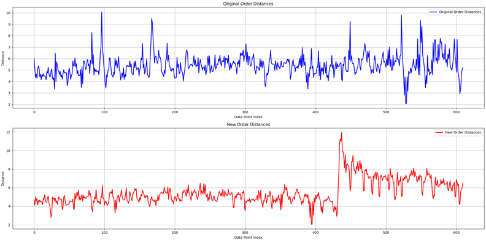
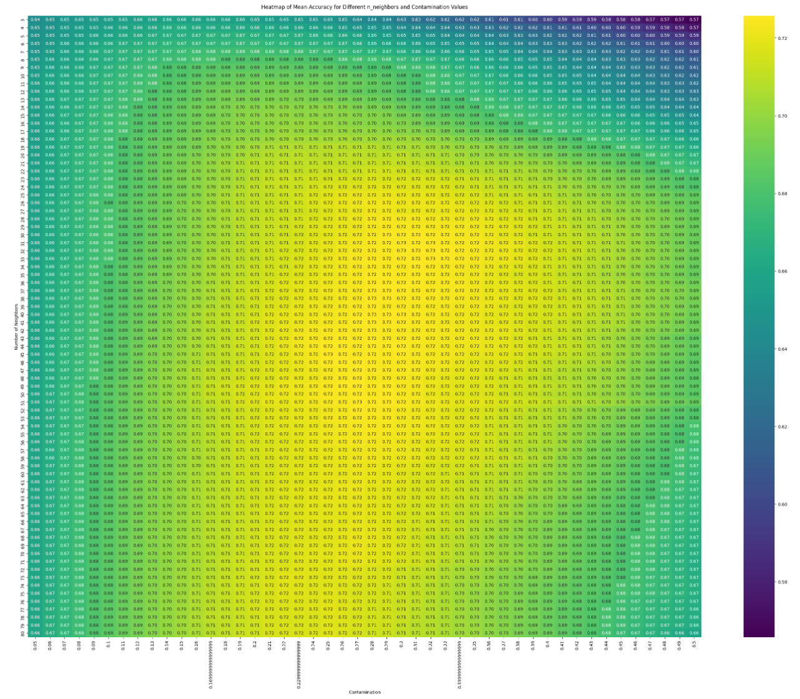
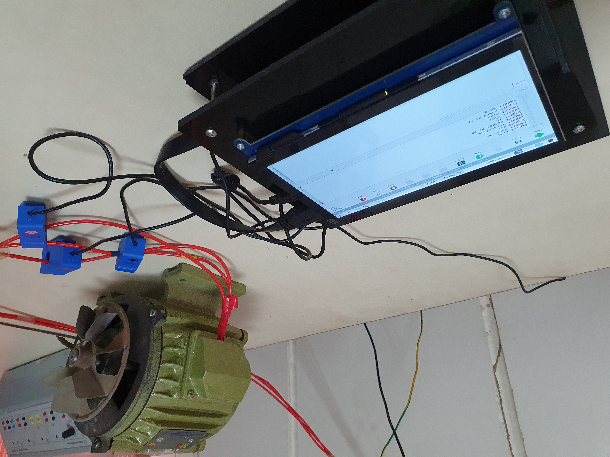

Critical Analysis of WIL placement
Introduction
During my Work Integrated Learning (WIL) placement at Solis Security, a leading cybersecurity firm, I was assigned a comprehensive project focusing on the Automatic Data Quality Improvement. This project was aimed at enhancing data quality for the training of advanced language models, specifically improving the detection of Personally Identifiable Information (PII) and reducing data redundancy. This critical reflection will dissect my actions, learnings, and areas for improvement during this placement using the DIEP framework to structure the analysis: Describe, Interpret, Evaluate, and Plan.

Describe
In the initial phase of my placement, I conducted extensive research on anomaly detection and drift detection techniques. My responsibilities included developing a prototype detection algorithm, managing comprehensive datasets for machine learning training, and conducting performance analyses using advanced data processing and visualization techniques such as UMAP and Matplotlib. Additionally, I implemented the Local Outlier Factor (LOF) model for anomaly detection to enhance data quality and model efficiency.
Interpret
My work significantly enhanced my understanding of data quality management and its critical role in cybersecurity. The hands-on experience allowed me to apply theoretical knowledge to real-world problems, reinforcing the importance of practical applications in a professional setting. The project underscored the necessity of continuous learning and adaptability, as I had to frequently adjust my approach based on new findings and feedback. For instance, my initial assumption that drift detection would be the primary technique for identifying data quality issues was challenged, leading me to pivot to anomaly detection methods, which proved more effective in our context. If we refer to the picture mentioned below, we can clearly observe that the fluctuations in the graph are of random nature which is more of an anomaly problem rather than drift.

Evaluate
Reflecting on my actions, several strengths and areas for improvement emerge. One of my key strengths was the ability to conduct thorough research and apply it effectively, which was crucial in developing a robust detection algorithm. My technical skills in using Python and machine learning frameworks like Scikit-learn were significantly enhanced, allowing me to handle complex data processing tasks efficiently. Additionally, my problem-solving skills were tested and honed as I navigated various challenges, such as the unexpected issues with drift detection and the need for extensive hyperparameter tuning in the LOF model.
However, there were areas where my performance could have been improved. Initially, I underestimated the complexity of managing large datasets and ensuring data integrity. This oversight led to delays in the early stages of the project as I had to revisit and rectify data handling processes. Furthermore, my communication with stakeholders could have been more proactive. While I ensured regular updates, more frequent and detailed briefings could have facilitated better alignment and faster decision-making.
Plan
Moving forward, I am committed to addressing these areas for improvement. To enhance my data management skills, I plan to undertake advanced courses in data engineering and database management. This will equip me with a deeper understanding of efficient data handling techniques and tools, ensuring smoother project execution in the future. Additionally, I will focus on improving my stakeholder communication skills by adopting more structured and regular reporting practices, ensuring all parties are consistently informed and engaged.
To maintain a trajectory of continuous learning, I will actively seek feedback and mentorship from experienced professionals in the field. Participating in relevant workshops and conferences will also be a priority to stay updated with the latest advancements in data quality management and machine learning. These steps will not only help in overcoming my current limitations but also prepare me for more complex challenges in my future career.
Conclusion
The WIL placement at Solis Security was an invaluable experience that significantly contributed to my professional growth. Through critical reflection, I have identified both my strengths and areas for improvement, laying a clear path for future development. By addressing the gaps in my skill set and enhancing my strengths, I am confident in my ability to contribute effectively to future projects and advance in my career in data analytics and cybersecurity. This commitment to continuous learning and improvement aligns with the expectations of the industry and will be instrumental in achieving my long-term career goals.
Technical and Transferable Skills Reflection
Context
During my placement at Solis Security, a prominent cybersecurity firm, I was entrusted with a critical role in the "Automatic Data Quality Improvement" project. This initiative aimed to enhance the quality of datasets used in training advanced machine learning models for cybersecurity applications, specifically focusing on the detection of Personally Identifiable Information (PII) and minimizing redundancy in data. This project was pivotal for Solis Security as it directly impacted the efficiency and reliability of their cybersecurity measures. My involvement in this project provided a rich learning environment where I could apply and further develop my technical and transferable skills, aligning closely with my career aspirations in Data Analytics and Machine Learning.
Action
Throughout the placement, I engaged in various activities that significantly contributed to my skillset. One of the primary technical skills I developed was in anomaly detection. Initially, I conducted thorough research on different anomaly detection methods, assessing their suitability for high-density data clusters. This research phase was critical as it laid the groundwork for implementing the Local Outlier Factor (LOF) model, a sophisticated anomaly detection technique.
Implementing the LOF model involved several stages. First, I had to pre-process the data to ensure it was clean and ready for analysis. This included handling missing values, normalizing data ranges, and removing irrelevant features. I utilized Python libraries such as Pandas and NumPy extensively for these tasks. The pre-processing phase was crucial as it directly affected the accuracy of the anomaly detection model. The graph below represents how the data was represented before and after applying the LOF model.

Once the data was prepared, I proceeded with the implementation of the LOF model. This involved tuning multiple hyperparameters, including the number of neighbours (n_neighbors) and the contamination factor, which determines the proportion of outliers in the dataset. Hyperparameter tuning was performed using cross-validation techniques to ensure the model's robustness and reliability. The choice of these parameters was guided by iterative testing and validation against labelled datasets, ensuring the model's performance was optimized for the specific types of anomalies encountered in our data. The image below refers to a Heat Map of grid search strategy for hyperparameter tuning.

Another significant aspect of my role was the development of data visualization tools to aid in data quality assessment and anomaly detection. Using libraries such as Matplotlib and Seaborn, I created detailed visualizations that highlighted key data patterns and anomalies. These visualizations were crucial for both internal analysis and communicating findings to stakeholders. They provided clear, interpretable insights that facilitated better decision-making processes within the team.
Beyond technical skills, the placement at Solis Security allowed me to hone several transferable skills. Effective communication was paramount, particularly when coordinating with team members and presenting complex findings to stakeholders. Regular updates were provided through detailed reports, which required the ability to articulate technical information in a clear and concise manner. This skill is essential in any collaborative work environment, ensuring that all team members and stakeholders are aligned and informed about project progress and challenges.
Result
The outcomes of my contributions were considerable and impactful. The implementation of the LOF anomaly detection model significantly improved the accuracy and efficiency of our data quality assessments. The model reduced data redundancy significantly, which enhanced the quality of datasets used for training our machine learning models. This reduction in redundancy not only improved model performance but also streamlined data processing workflows, resulting in faster and more reliable cybersecurity analyses.
The comprehensive dataset management practices I established ensured that the data used for machine learning training was of the highest quality. By maintaining well-organized and balanced datasets, we were able to train models that were more robust and accurate in detecting PII. This had a direct positive impact on Solis Security's ability to protect sensitive information and prevent cyber-attacks.
The data visualization tools I developed played a critical role in our analytical processes. They allowed us to quickly identify and address data quality issues, facilitating more informed decision-making. These visual tools also proved valuable in stakeholder communications, providing clear and convincing evidence of the project's progress and success.
Learning
This placement reinforced the importance of continuous learning and adaptability in the rapidly evolving field of data analytics and cybersecurity. The hands-on experience with advanced anomaly detection techniques and data management practices provided me with a deeper understanding of these critical areas. I learned the value of thorough research and iterative testing in developing robust analytical models. The experience also highlighted the importance of clear and effective communication in driving project success and stakeholder engagement.
Moving forward, I am committed to further developing my skills in advanced machine learning techniques and data visualization. I plan to stay current with the latest advancements in these fields by engaging in ongoing education and professional development opportunities. Additionally, I aim to continue refining my communication skills, as the ability to convey complex technical information to diverse audiences is essential for success in any data-driven role.
In conclusion, my placement at Solis Security was a transformative experience that significantly enhanced my technical and transferable skills. The knowledge and insights gained during this period have equipped me with the tools and confidence to pursue a successful career in data analytics. The skills I developed and the achievements realized during this placement are a testament to the value of hands-on, real-world experience in professional growth and development.
Additional Artefact: Reflection on Continuous Learning and Skill Development
Context
Throughout my academic and professional journey, continuous learning and skill development have been central themes. My educational background in Electronic Engineering and subsequent Master's in Information Technology have provided a strong foundation in technical knowledge and analytical skills. My various roles, from Net Metering Officer to Machine Learning Intern, have allowed me to apply and expand these skills in diverse contexts. This reflection will focus on how my experiences, particularly during my undergraduate and postgraduate studies, have shaped my approach to continuous learning and skill development and how these experiences will impact my future career.
Action
During my undergraduate studies at Mehran University of Engineering & Technology, I led a team to develop a non-invasive embedded system for monitoring faults in 3-phase industrial induction motors. This project required deep technical knowledge in electronics and practical skills in Python programming and deep learning algorithms such as CNN, MLP, and LSTM. The successful completion of this project, along with the publication of our findings, was a significant milestone in my academic career. It taught me the importance of rigorous research, systematic experimentation, and the application of theoretical knowledge to solve real-world problems.

As I transitioned to my Master's program at Griffith University, I continued to build on these skills while embracing new areas such as data analytics and machine learning. One notable project during my postgraduate studies involved analysing real-time data from Twitter, YouTube, and Spotify using R and various APIs. This project enhanced my data acquisition, pre-processing, and network analysis skills, and introduced me to powerful visualization tools like Gephi and Tableau. Achieving over 95% in this project was a testament to my growing proficiency in handling complex datasets and extracting meaningful insights from them.

My professional experiences have further enriched my learning journey. As a Machine Learning/Data Analyst Intern at Solis Security, I worked on the Automatic Data Quality Improvement project. This role involved extensive research and the implementation of advanced data processing and anomaly detection techniques. By applying machine learning models such as the Local Outlier Factor (LOF) and fine-tuning hyperparameters, I significantly improved data quality and model performance. This experience highlighted the critical importance of continuous learning and adaptation in a fast-paced, technology-driven environment.
Result
The continuous learning approach I have adopted throughout my studies and professional experiences has yielded significant results. The successful completion of complex projects, high academic achievements, and impactful professional contributions all underscore the effectiveness of this approach. The skills I developed during my undergraduate studies laid a strong foundation for my postgraduate work, which in turn prepared me for the challenges of real-world applications in my professional roles.
For instance, the data quality improvement project at Solis Security not only enhanced my technical skills in machine learning and data analytics but also demonstrated the practical value of these skills in improving cybersecurity measures. The project outcomes, including significant reduction in data redundancy and enhanced model accuracy, directly contributed to Solis Security's operational excellence and underscored the importance of high-quality data in cybersecurity.
Learning
Reflecting on my journey, it is evident that continuous learning and skill development are not just academic pursuits but essential components of professional success. My experiences have shown that staying current with technological advancements and continually seeking to improve one's skills are vital in the ever-evolving field of IT and cybersecurity.
Moving forward, I am committed to furthering my knowledge in advanced machine learning techniques and data visualization tools. I plan to engage in ongoing professional development through courses, certifications, and practical projects. Additionally, I aim to enhance my leadership and project management skills, recognizing their importance in driving innovation and achieving strategic goals.
In conclusion, the skills and knowledge I have gained through continuous learning have been instrumental in my academic and professional achievements. This approach will remain a cornerstone of my career strategy, ensuring that I stay at the forefront of technological advancements and am well-equipped to tackle future challenges in the field of IT and cybersecurity.
Ethical Conduct
Ensuring Data Security and Privacy
During my placement at Solis Security, I placed a significant emphasis on maintaining the integrity and security of Personally Identifiable Information (PII). Understanding the sensitive nature of PII, I employed various secure methods to handle and process data, ensuring that all PII was protected throughout the project lifecycle.
Local Storage of Sensitive Data
One of the primary strategies I used was to store all sensitive data locally. This approach minimized the risk of data breaches that could occur during data transfer over the internet. By keeping the data on secure, encrypted local drives, I ensured that unauthorized access was prevented and data integrity was maintained.
Use of AI Tools Without Compromising Data
While utilizing AI tools such as ChatGPT to assist with various aspects of the project, I was careful about not sharing any actual data or sensitive information with these tools. Instead, I provided abstracted or synthetic data to the AI tools to simulate the scenarios and obtain the necessary insights without compromising any real data. This practice ensured that no PII was exposed during interactions with external systems, maintaining strict adherence to data privacy regulations.
Amendment of Sensitive Information in Reports
All reports and internal communications adhered to a strict policy of not including any sensitive data. Even for internal use, documents were crafted to exclude PII, focusing instead on the methodologies, results, and abstracted data analysis. This precaution was critical in maintaining data confidentiality and preventing any unintentional disclosures of sensitive information.
Ethical Conduct and Accountability
I was attentive about ethical conduct and professional accountability throughout the project. Recognizing the potential ethical implications of mishandling PII, I conducted regular audits and reviews of data handling processes to ensure compliance with industry standards and best practices. This proactive approach helped in identifying and mitigating any potential risks associated with data security.
By implementing these measures, I successfully upheld the principles of data privacy and security, which are paramount in the field of data analytics. The experience underscored the importance of rigorous data protection practices and ethical considerations in professional environments, particularly when dealing with sensitive information. My commitment to these principles not only ensured the success of the project but also reinforced my professional integrity and responsibility in handling sensitive data.
Holistic Experience
Context
One significant holistic experience that has greatly contributed to my personal and professional development is my proactive involvement in seeking industry mentoring outside of formal university programs. Recognizing the importance of real-world insights and guidance, I independently reached out to a seasoned data scientist in the industry, seeking mentorship to enhance my knowledge and skills in data analytics.
Context
During my postgraduate studies, I understood the value of learning from experienced professionals who could provide practical perspectives and career advice beyond academic knowledge. I connected with a senior data scientist from a leading tech company through professional networking platforms. This mentoring relationship offered me valuable guidance on various aspects of the data analytics field, including career development strategies and best practices.
Action
Throughout this self-initiated mentoring program, I scheduled regular meetings with my mentor to discuss the broader field of data analytics, emerging trends, and best practices. My mentor provided constructive feedback on my approaches, suggested alternative methods for improving my skills, and advised on navigating ethical considerations in data handling and privacy.
Result
The mentoring experience significantly boosted my confidence and competence in handling complex data analytics tasks. I learned advanced data visualization techniques, which I applied to present my findings more effectively. My mentor's guidance also helped me better understand the ethical implications of working with data, ensuring that I adhere to best practices in data privacy and security.
Learning
This experience underscored the importance of continuous learning and professional development. It reinforced my belief in seeking external perspectives and feedback to enhance my skills and knowledge. The mentorship also highlighted the significance of networking and building professional relationships, which are crucial for career growth in the tech industry.
Transferable Skills
Communication: Improved my ability to articulate complex ideas and present them clearly and effectively.
Critical Thinking: Regular discussions with my mentor challenged me to think critically about my work and approach problems from different angles.
Ethical Awareness: Emphasis on ethical considerations in data analytics enhanced my understanding and commitment to responsible data practices.
By taking the initiative to seek mentorship outside formal programs, I not only gained technical skills but also developed a holistic understanding of the professional landscape.